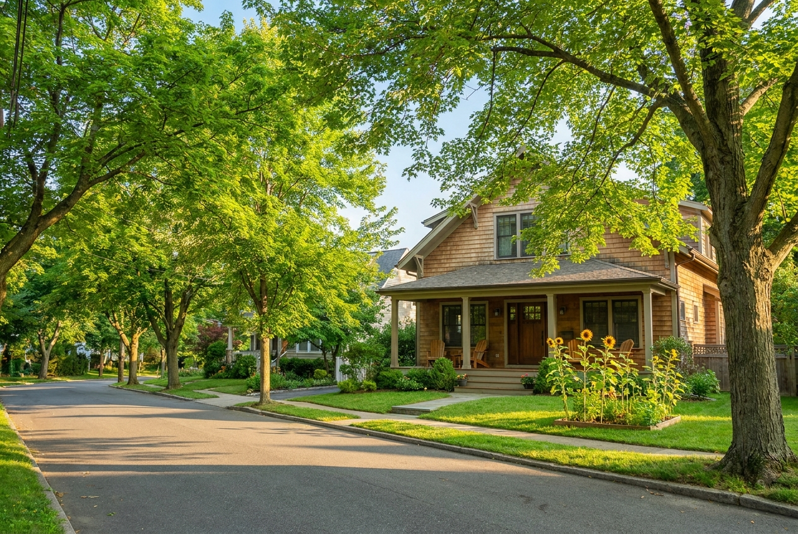

Safe, licensed, and verified
Secure entry systems, fingerprinted staff, regular fire drills, and full New York State licensing — your child is protected the moment they walk in.
Garden's Day Care gives New York families a place their children truly feel at home — warm, nurturing, thoughtfully run, and built on fourteen years of love and education. Manhattan, Yonkers, and Central Valley.

Early childhood is when a child's sense of safety, curiosity, and confidence is built — and we take that seriously. Every room, routine, and teacher is chosen to help your child thrive.
Secure entry systems, fingerprinted staff, regular fire drills, and full New York State licensing — your child is protected the moment they walk in.
A research-based, hands-on method — structured by age group, playful in practice, and proven to prepare children for kindergarten and beyond.
Our team is CPR-certified, bilingual (English & Spanish), and chosen for warmth first. Low child-to-caregiver ratios mean your child gets noticed — every day.
Built for real New York schedules — with room for full-time, part-time, and early-drop options across three locations that match your family's life.
Daily photo uploads, regular updates, and an open-door philosophy. You'll know exactly how your child's day went — every day.
Whether you're uptown in Manhattan, settled in Yonkers, or heading up to Central Valley — there's a Garden's within reach, and siblings across locations welcome.
Every location shares the same philosophy, the same high standards, and the same loving team behind it — just in the neighborhood that fits your life.
60 East Washington Ave, Suite 2G
New York, NY 10032
Near the George Washington Bridge & public transit

33 Whitfield Ave
Central Valley, NY 10917
Big outdoor space, fresh Hudson Valley air
We follow The Creative Curriculum, a research-based, hands-on approach that nurtures cognitive, physical, social, and emotional development — tailored thoughtfully to each age group.
Our youngest learners are held, sung to, and surrounded by nurturing caregivers. Every day begins with warmth — the foundation for everything they'll learn to love.
This is the age of curiosity — and our toddler rooms are designed to say yes to it. Children learn through structured play, big feelings, new friendships, and small, meaningful choices.
Project-based learning, early literacy, and the social-emotional skills to walk confidently into kindergarten. Children leave Garden's ready — in every sense of the word.
Every photo below is from our own classrooms. No stock imagery — just the children, the learning, and the love.


I looked everywhere for the perfect daycare and was losing hope until I found Gardens. The first thing that caught my attention was how clean it was — I could smell clean air when I walked in, and it just gave me this good feeling. Ms. Garden took her time to answer every question.
The staff are caring, capable, and communicative about my daughter's day — how she ate and slept, if she might be coming down with something. I feel like they are an extension of my husband and I with their caring approach.
Our little guy has been going to Gardens for almost two years and he loves it. He can't wait to get inside and play with his friends, read fun books, and learn. We've felt really comfortable each day knowing the staff cares about him and every little person in there.
What drew me to Gardens was the bright, clean, sunny space — and the meals. Hot, healthy, mostly non-processed food, so different from packaged snacks at other daycares. We've since moved and the thing we miss most is definitely Gardens. We wish we could take them with us.
The team is loving and attentive, and it's clear they care about our daughter. She runs to the door with a smile on her face at drop-off and is always happy at pick-up. The facility is also spotless, which gives us peace of mind.
We've sent our daughter to Gardens since she was one, and we couldn't be happier. The staff's attention to detail, genuine care, and love for the children are evident every day. We especially love the daily photo uploads — we get to share in what she's learning all day long.
Our best families come from the ones we already love. When you introduce Garden's to a friend and they enroll, you get $200 — and they get $200 off their registration fee. Everybody wins.
There's no better way to know if Garden's is right for your family than to walk through our doors. Pick the location, tell us a few things, and we'll reach out to set a tour.